intrinsic geometry atlas; no mechanism performance inference.
J1 145° (certified_primary)
· J2 135° (certified_primary)
· memberships biological_refinement
· samples 1089
· failed rows 0
· git ce9afb8f37cf86c82931c194144a2c239e6b762e
Identity-on-shared-Q is a null control, not a third ranked competitor. Paired color limits are computed from the four-bar and span-matched gearbox only.
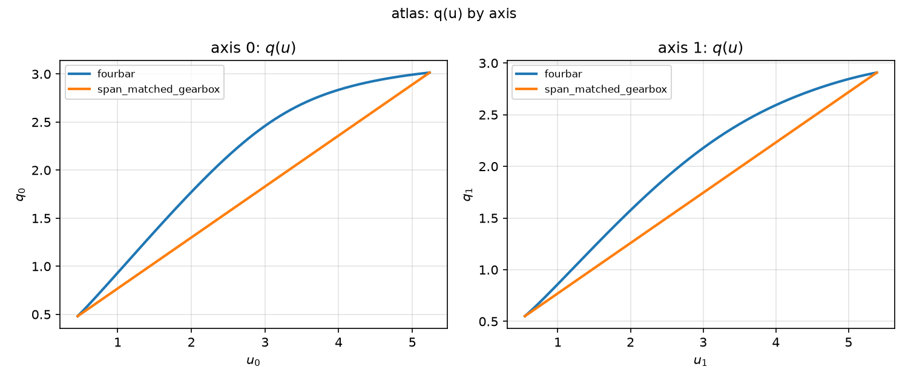
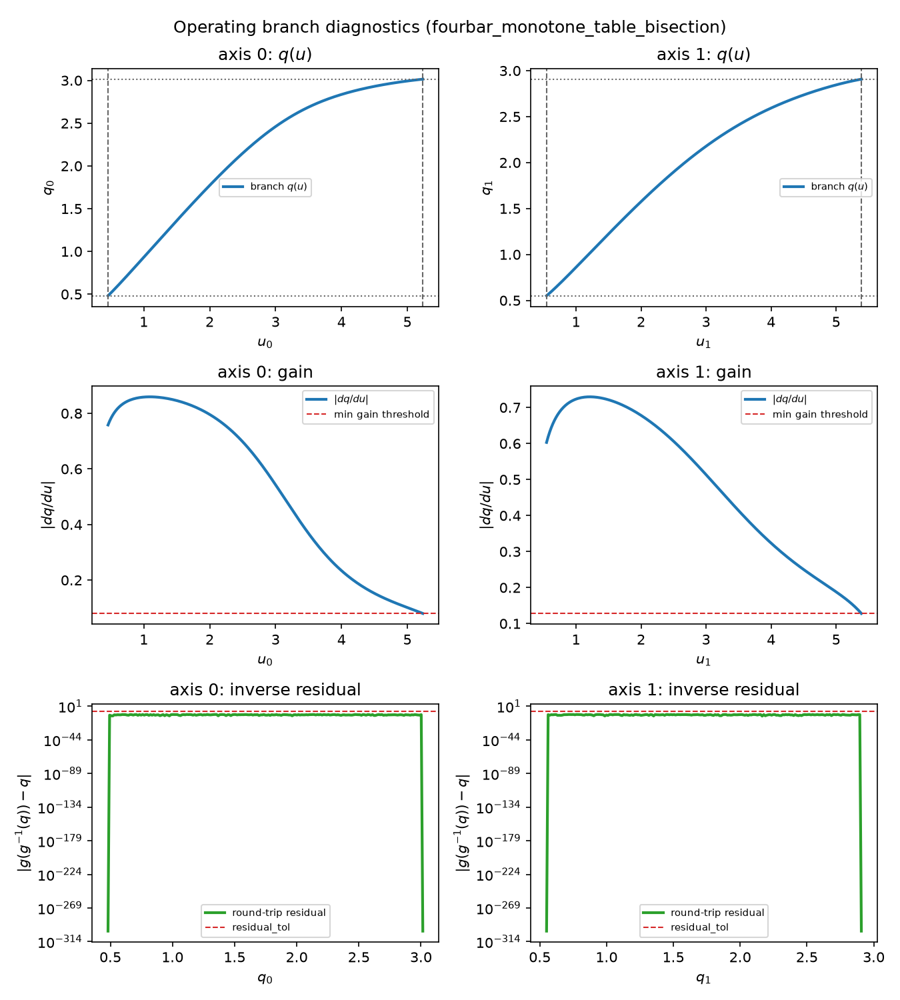
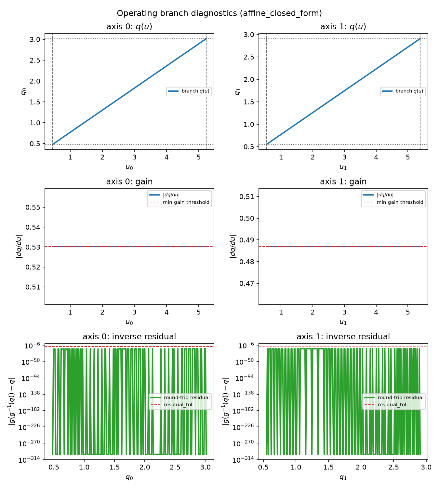
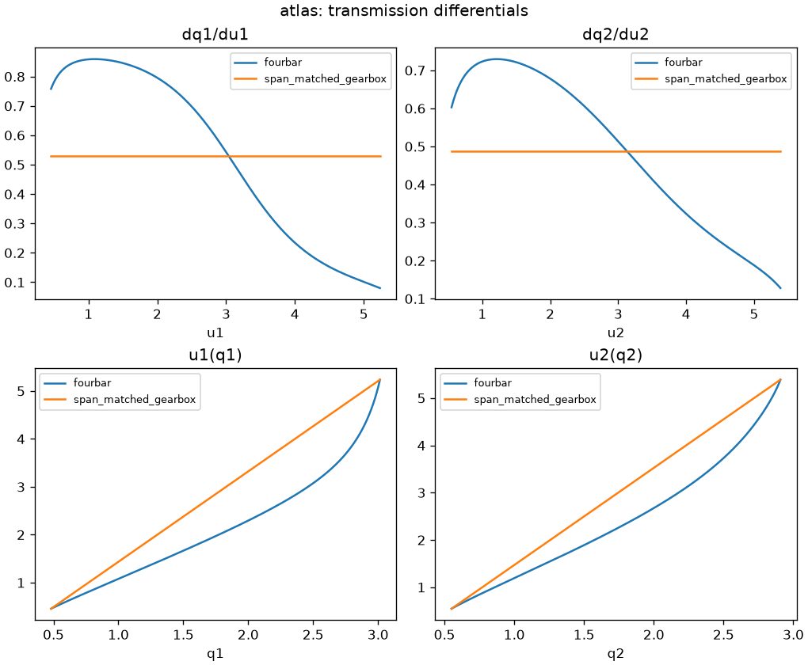
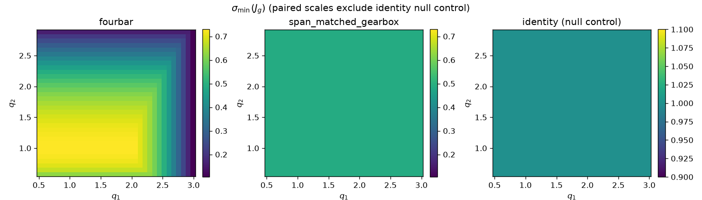
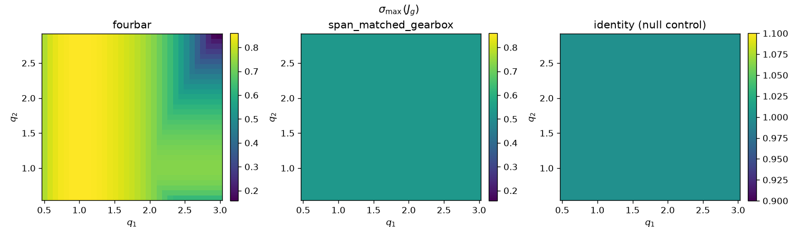
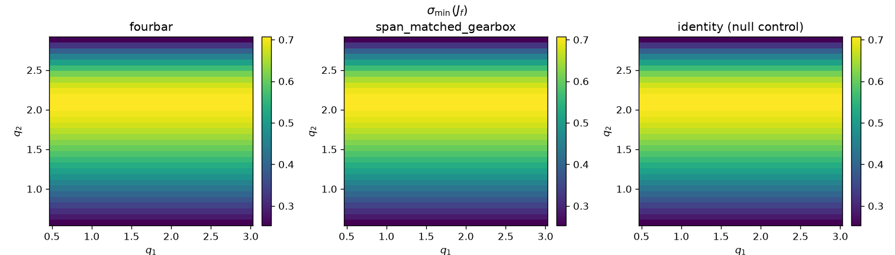
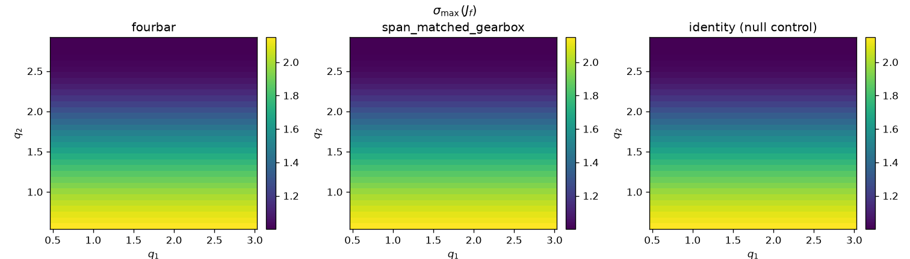
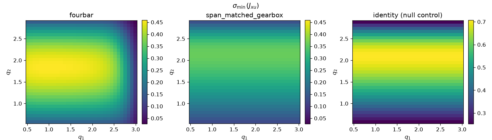
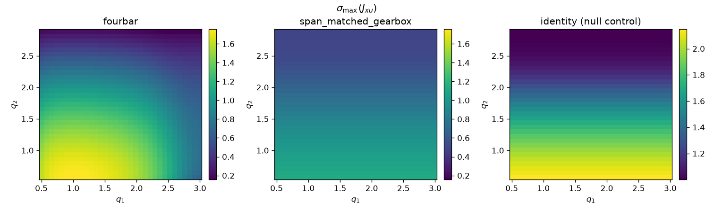
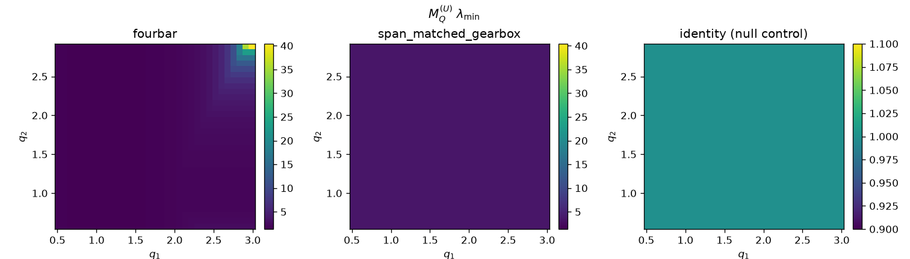
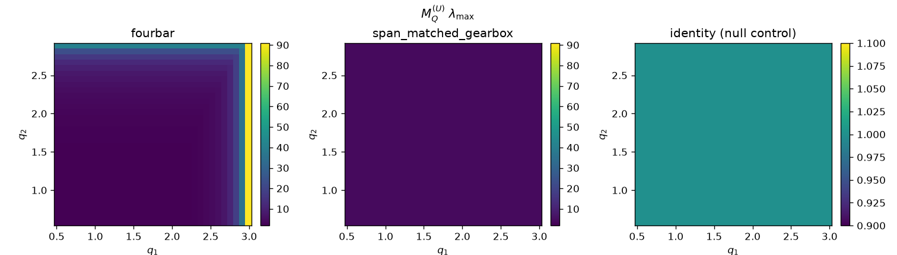
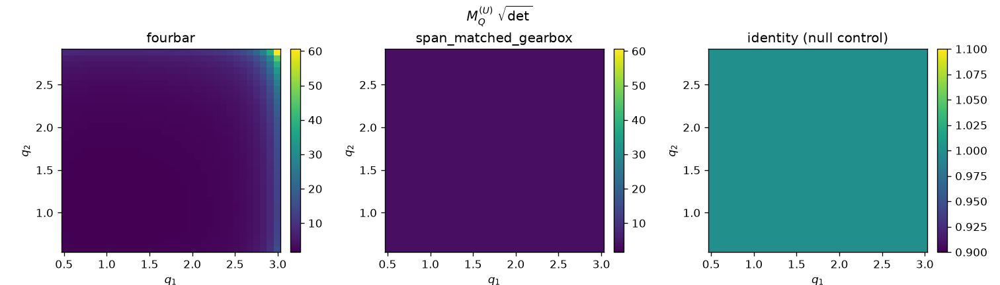
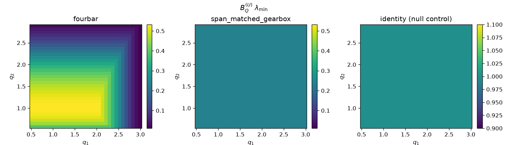
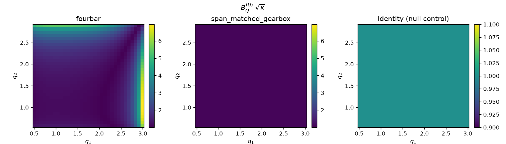
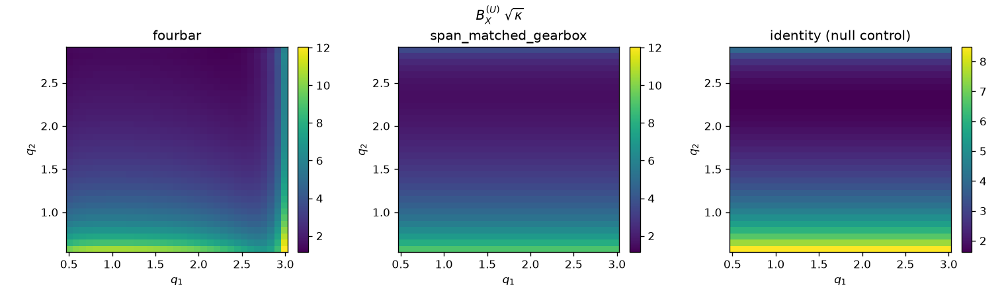
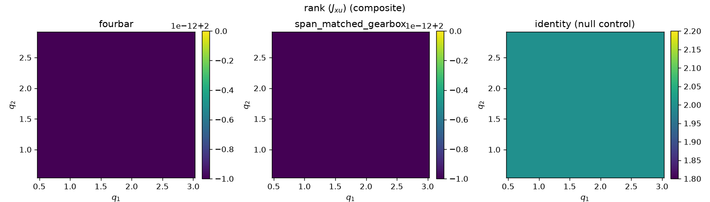
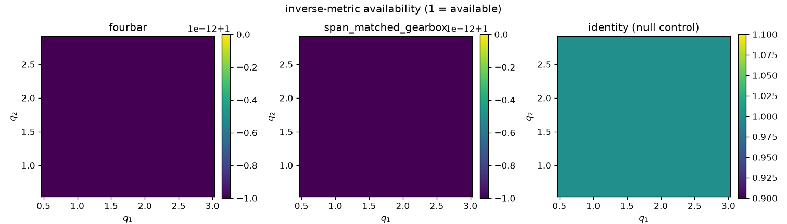